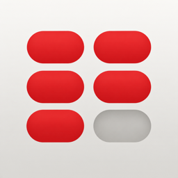

DosisPolítica de privacidad
Última actualización: 27 de septiembre de 2026
Tus recetas, tus tomas y tus horarios viven solo en tu iPhone. No hay cuentas ni registro. Lo único que sale del teléfono son estadísticas de uso anónimas, sin ningún dato de salud, y puedes apagarlas.
Qué guarda la app y dónde
- Tus recetas y tus tomas (medicamentos, dosis, horarios, lo que marcas como tomado u omitido) se guardan en el almacenamiento del propio dispositivo.
- Tus preferencias (horario de sueño, horas de tus comidas, ajustes de avisos) se guardan en el dispositivo, en un espacio compartido con el widget de Dosis para que pueda enseñarte la próxima toma.
- Las fotos y PDF de recetas se procesan en el teléfono para leer el texto. No se suben a ningún sitio. La imagen no se conserva: se guarda el resultado que tú confirmas.
Nada de esto sale del dispositivo.
Estadísticas de uso
Para saber qué partes de la app se usan y dónde algo falla, Dosis envía estadísticas anónimas a TelemetryDeck, un servicio de analítica con servidores en la Unión Europea. Se envía:
- Qué acciones se hacen, sin su contenido: por ejemplo, «se escaneó una receta», «se leyeron 3 medicamentos» o «se marcó una toma como tomada».
- Datos técnicos: modelo de teléfono, versión de iOS, idioma y versión de la app.
- Un identificador aleatorio y cifrado, que no permite saber quién eres.
Nunca se envían nombres de medicamentos, dosis, horarios, lo leído de una receta ni datos de Salud. TelemetryDeck no guarda tu dirección IP y no se usa para publicidad ni para seguirte entre apps.
Puedes apagarlas en Ajustes → Tus datos → Estadísticas anónimas.
Salud (HealthKit)
Solo si lo pides expresamente («Traer mis horas de Salud»), Dosis lee de la app Salud tus horas de sueño de las últimas dos semanas para proponerte un horario y no programarte tomas de madrugada. Ese dato se usa en el momento, no se almacena, no se comparte y nunca se usa para publicidad. Puedes negar el permiso: la app funciona igual.
Avisos
Los recordatorios son notificaciones locales programadas por el propio teléfono. No hay servidor de notificaciones ni identificadores enviados a terceros.
Terceros
El único servicio de terceros es TelemetryDeck, para las estadísticas anónimas descritas arriba. No hay publicidad. No se rastrea a nadie, ni dentro ni fuera de la app.
Copias de seguridad
Dosis no sube copias a la nube. Si borras la app o cambias de teléfono, se pierde lo registrado, salvo que hayas hecho una copia del dispositivo con iCloud o con el Finder; en ese caso los datos van dentro de esa copia y se restauran con ella.
Tus datos son tuyos
Puedes borrarlo todo desde Ajustes → Tus datos → Borrar todo. Al desinstalar la app también se elimina lo que guardaba.
Menores
Dosis no está dirigida a menores de 13 años.
Cambios
Si esta política cambia, se actualizará esta página con su fecha.
Contacto
Escribe a angeljackson0933@gmail.com.